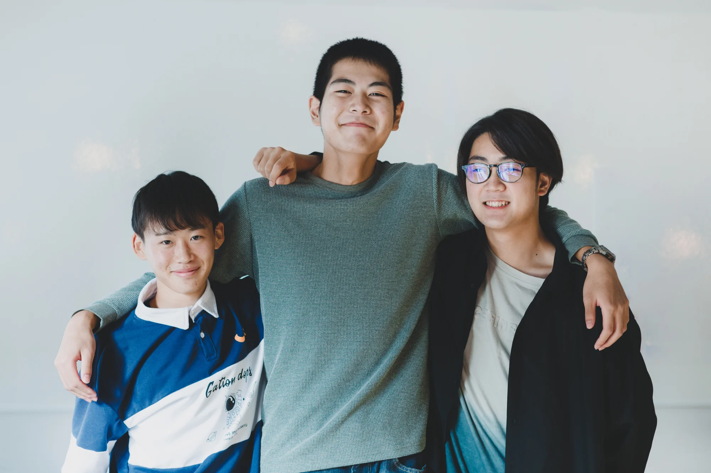
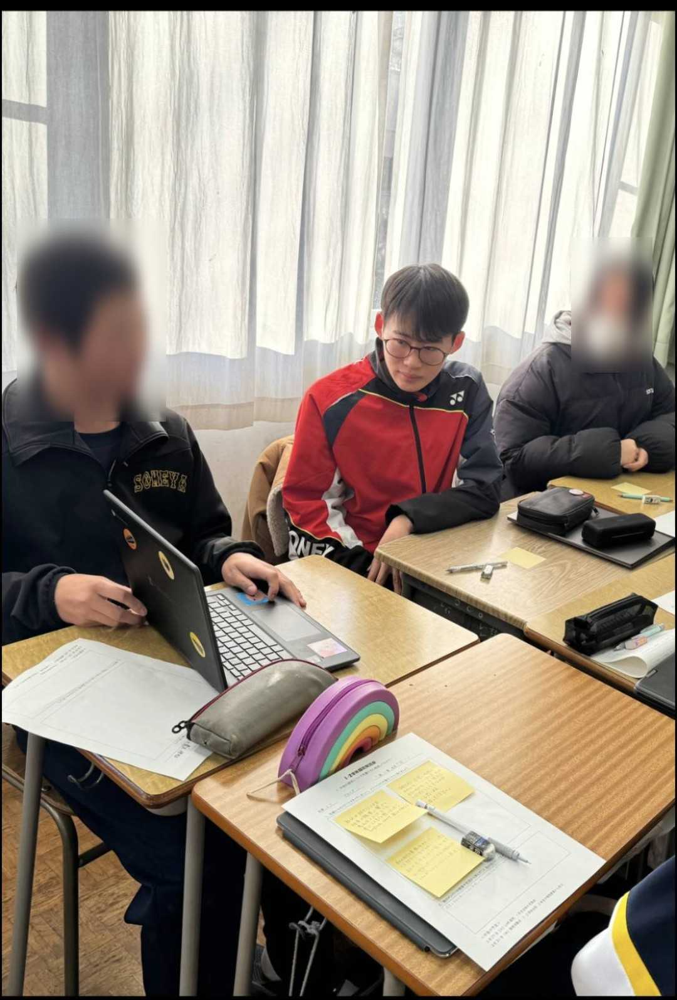
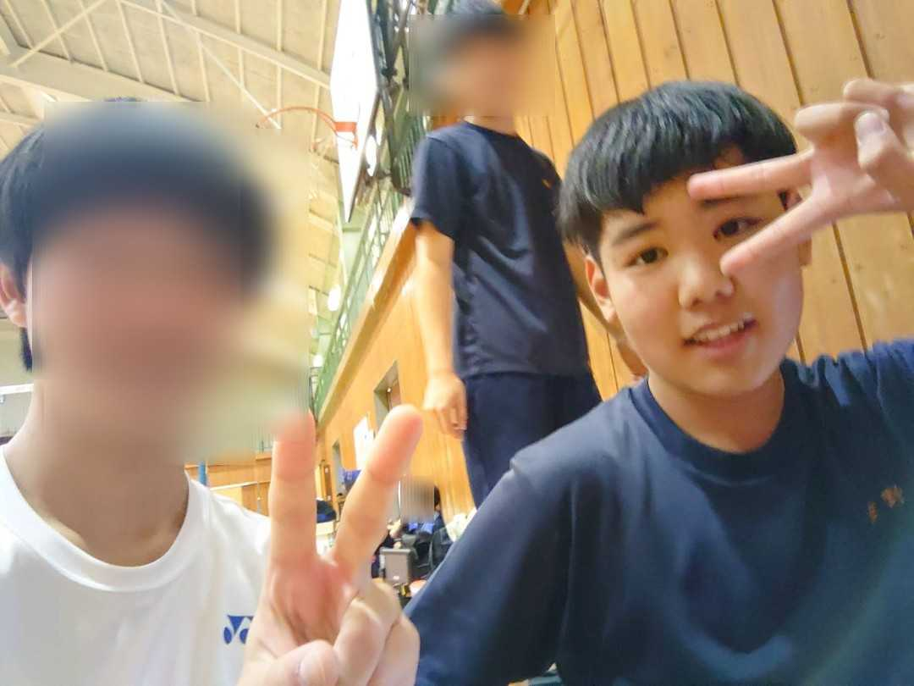

What is junzs
Junzsとは上田染谷丘高校の探究活動の中で生まれたグループです
文化祭の待ち時間をわかるようになったらいいなぁという思いから活動を始めました
現在文化祭専用の待ち時間表示、予約サイトを作るプロジェクトが進行中です
Member

くらりゅ
長野県に住むしがない高校生
趣味はカメラや吹奏楽（担当楽器：ユーフォニアム）など何系統の人間なのかわからない
最近は旅行に行きたいなと考えている。
趣味はカメラや吹奏楽（担当楽器：ユーフォニアム）など何系統の人間なのかわからない
最近は旅行に行きたいなと考えている。

おおやまくん
身長が190センチ台という超大型の人間。
たぶん実生活で支障があるんじゃないかとつつみんはおもっている。
バドミントン班に所属。
たぶん実生活で支障があるんじゃないかとつつみんはおもっている。
バドミントン班に所属。

石井ちゃん
なんか小さくてかわいいの。
バドミントン班に所属。
バドミントン班に所属。

さのくん
なんか大きくてかわいいの。
バドミントン班に所属。
バドミントン班に所属。
Project
Schoolfes web app

文化祭の待ち時間の表示や予約機能などをつけることができるウェブアプリです
Scholfes web app を導入することで文化祭のUX改善に役立ちます！
くわしくはこちらを参照してください！
news
現在のニュースはありません
ニュースが入り次第更新します